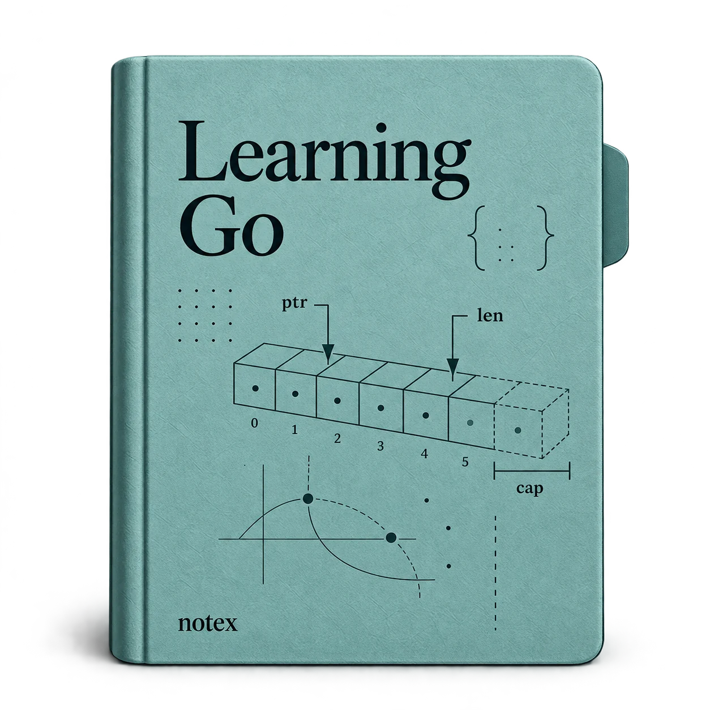

OPEN LEARNING PATH / GO
Write Go with a clearer mental model.
Build fluency in Go through types, control flow, functions, memory, and testing.
5 MODULES · 119 LESSONS · FREE TO READ
A little progress, one lesson at a time.Your progress stays in this browser.
Start learning →CURRICULUM STRUCTURE
- 01.01Arrays—Too Rigid to Use DirectlyLike most programming languages, Go has arrays. However, arrays are rarely used directly in Go. You’ll learn why in a bit, but first let’s quickly cover array declaration…
- 01.02SlicesMost of the time, when you want a data structure that holds a sequence of values, a slice is what you should use. What makes slices so useful is that you can grow slices as…
- 01.03Measuring slice lengthGo provides several built-in functions to work with slices. You’ve already seen the built-in len function when looking at arrays. It works for slices too. Passing a nil slice…
- 01.04Growing slices with appendThe built-in append function is used to grow slices:
- 01.05CapacityAs you’ve seen, a slice is a sequence of values. Each element in a slice is assigned to consecutive memory locations, which makes it quick to read or write these values. The…
- 01.06Allocating slices with makeYou’ve already seen two ways to declare a slice, using a slice literal or the nil zero value. While useful, neither way allows you to create an empty slice that already has a…
- 01.07Emptying a SliceGo 1.21 added a clear function that takes in a slice and sets all of the slice’s elements to their zero value. The length of the slice remains unchanged. The following code:
- 01.08Declaring Your SliceNow that you’ve seen all these ways to create slices, how do you choose which slice declaration style to use? The primary goal is to minimize the number of times the slice…
- 01.09Sharing and Copying SlicesAnother difference between slices and arrays is that assigning an array variable to another array variable creates an independent copy of the array, while assigning a slice…
- 01.10Slicing SlicesA slice expression creates a slice from a slice. It’s written inside brackets and consists of a starting offset and an ending offset, separated by a colon (:). The starting…
- 01.11Copying Slices of SlicesSlice expressions allow you to copy from the middle of the source slice:
- 01.12Converting Arrays to SlicesSlices aren’t the only thing you can slice. If you have an array, you can take a slice from it using a slice expression. This is a useful way to bridge an array to a function…
- 01.13Converting Slices to ArraysUse a type conversion to make an array variable from a slice. You can convert an entire slice to an array of the same type, or you can create an array from a subset of the slice.
- 01.14Comparing SlicesAs I mentioned earlier, slices are not comparable, which means they cannot be compared to each other using the == and != operators (slices can only be compared to nil). If you…
- 01.15Other Slice FunctionsThe slices package in the Go Standard Library includes many other functions to make it easier to work with slices. If you find yourself writing a function to manipulate or…
- 01.16Code Review: Slices and ArraysUse slices instead of arrays, unless the number of elements never changes.
- 01.17Practice: Slices and ArraysThe following exercises will help solidify your knowledge of slices.
- 01.18Strings and Runes and BytesNow that I’ve talked about slices, we can look at strings again. You might think that a string in Go is made out of runes, but that’s not the case. Under the covers, Go uses a…
- 01.19MapsSlices are useful when you have sequential data. Like most languages, Go provides a built-in data type for situations where you want to associate one value to another. The map…
- 01.20What Is a Hash Map?In computer science, a map is a data structure that associates (or maps) one value to another. Maps can be implemented in several ways, each with its own trade-offs. The map…
- 01.21Reading and Writing a MapLet’s look at a short program that declares, writes to, and reads from a map. You can run the program in Example 2-10 on The Go Playground.
- 01.22The comma ok IdiomAs you’ve seen, a map returns the zero value if you ask for the value associated with a key that’s not in the map. This is handy when implementing things like the totalWins…
- 01.23Deleting from MapsKey-value pairs are removed from a map via the built-in delete function:
- 01.24Emptying a MapThe clear function that you saw in “Emptying a Slice” works on maps also. A cleared map has its length set to zero, unlike a cleared slice. The following code:
- 01.25Comparing MapsGo 1.21 added a package to the standard library called maps that contains helper functions for working with maps. Two functions in the package are useful for comparing if two…
- 01.26Copying MapsAssigning a map variable to another map variable shares the map between the two variables. If you modify one variable, the other is modified as well. This is similar to the way…
- 01.27Using Maps as SetsMany languages include a set in their standard library. A set is a data type that ensures there is at most one of a value, but doesn’t guarantee that the values are in any…
- 01.28Code Review: Strings and MapsDon’t slice or index a string unless you know it’s single-byte content.
- 01.29Practice: Strings and MapsThe following exercises cover strings and maps.
- 01.30StructsMaps are a convenient way to store some kinds of data, but they have limitations. They don’t define an API since there’s no way to constrain a map to allow only certain keys.…
- 01.31Code Review: StructsUse structs to group related data.
- 01.32Practice: StructsThe following exercises test what you’ve learned about structs.
- 01.33Recap: Composite TypesYou’ve learned a lot about composite types in Go. In addition to learning more about strings, you now know how to use the built-in container types: slices and maps. You can…
- 02.01BlocksGo lets you declare variables in lots of places. You can declare them outside of functions, as the parameters to functions, and as local variables within functions.
- 02.02Branching with ifThe if statement in Go is much like the if statement in most programming languages. Because it is such a familiar construct, I’ve used it in previous sample code without…
- 02.03Code Review: Blocks, shadowing, and if statementsWatch for accidental shadowing when using := in inner scopes.
- 02.04Practice: Blocks, shadowing, and if statementsThe following exercises let you try out code with blocks and if statements.
- 02.05for, Four WaysAs in other languages in the C family, Go uses a for statement to loop. What makes Go different from other languages is that for is the only looping keyword in the language. Go…
- 02.06The Complete for StatementThe first for loop style is the complete for declaration you might be familiar with from C, Java, or JavaScript, as shown in Example 3-8.
- 02.07The Condition-Only for StatementWhen you leave off both the initialization and the increment in a for statement, do not include the semicolons. (If you do, go fmt will remove them.) That leaves a for…
- 02.08The Infinite for StatementThe third for statement format does away with the condition, too. Go has a version of a for loop that loops forever. If you learned to program in the 1980s, your first program…
- 02.09break and continueHow do you get out of an infinite for loop without using the keyboard or turning off your computer? That’s the job of the break statement. It exits the loop immediately, just…
- 02.10The versatile for-range StatementThe fourth for statement format is called a for-range loop and resembles the iterators found in other languages. It is for iterating over elements in some of Go’s built-in…
- 02.11Labeling Your for StatementsBy default, the break and continue keywords apply to the for loop that directly contains them. What if you have nested for loops and want to exit or skip over an iterator of an…
- 02.12Choosing the Right for StatementNow that I’ve covered all forms of the for statement, you might be wondering when to use which format. Most of the time, you should use the for-range format. A for-range loop…
- 02.13Code Review: for loopsPrefer for-range loops, especially when you’re iterating over every element in a compound type. They are also the easiest way to walk a string by runes or count up to a…
- 02.14Practice: for loopsThe following exercises let you write your own for loops.
- 02.15Choosing with switchLike many C-derived languages, Go has a switch statement. Most developers in those languages avoid switch statements because of their limitations on values that can be switched…
- 02.16goto—Yes, gotoGo has a fourth control statement, but chances are you’ll never use it. Ever since Edsger Dijkstra wrote “Go To Statement Considered Harmful” in 1968, the goto statement has…
- 02.17Code Review: switch and gotoA break keyword only breaks out of its immediate scope. If you have a switch statement inside a for loop, a break in one of the switch statement’s case clauses breaks out of…
- 02.18Practice: switch and gotoThe following exercises let you explore switch statements and goto.
- 02.19Recap: Blocks, Shadows, and Control StructuresThis topic covered a lot of important topics for writing idiomatic Go. You’ve learned how to use blocks, shadowing, and control structures correctly, and to write simple Go…
- 03.01Declaring and Calling FunctionsThe basics of Go functions are familiar to anyone who has programmed in other languages with first-class functions, like C, Python, Ruby, or JavaScript. Just as with control…
- 03.02Simulating Named and Optional ParametersBefore getting to Go’s unique function features, I’ll mention two that Go doesn’t have: named and optional input parameters. With one exception, which I will cover in the next…
- 03.03Variadic Input Parameters and SlicesYou’ve been using fmt.Println to print results to the screen, and you’ve probably noticed that this function allows any number of input parameters. How does it do that?
- 03.04Multiple Return ValuesThe first difference that you’ll see between Go and other languages is that Go allows for multiple return values. Let’s add a small feature to the previous division program.…
- 03.05Ignoring Returned ValuesWhat if you call a function and don’t want to use all the returned values? As covered in “Unused Variables”, Go does not allow unused variables. If a function returns multiple…
- 03.06Named Return ValuesIn addition to letting you return more than one value from a function, Go allows you to specify names for your return values. Rewrite the divAndRemainder function one more…
- 03.07Blank Returns—Never Use These!If you use named return values, you need to be aware of one severe misfeature in Go: blank (sometimes called naked) returns. If you have named return values, you can just write…
- 03.08Code Review: functions, parameters, and return valuesA function shouldn’t have a lot of parameters. Make sure your function isn’t doing too much.
- 03.09Practice: functions, parameters, and return valuesThese exercises let you experiment with writing functions of your own.
- 03.10Functions Are ValuesJust as in many other languages, functions in Go are values. The type of a function is built out of the keyword func and the types of the parameters and return values. This…
- 03.11ClosuresFunctions declared inside functions are special; they are called closures. This is a computer-science word that means that functions declared inside functions can access and…
- 03.12Code Review: Function values and closuresIf multiple functions with the same signature are used for similar purposes and assigned to variables, define a function type and use it when declaring the function variables.…
- 03.13Practice: Function values and closuresThese exercises test your knowledge of function values and closures.
- 03.14Cleaning up with deferPrograms often create temporary resources, like files or network connections, that need to be cleaned up, no matter how many exit points the function has, or whether it…
- 03.15Go Is Call by ValueYou might hear people call Go a call-by-value language. This means that when you supply a variable for a parameter to a function, Go always makes a copy of the variable’s…
- 03.16Code Review: defer and call by valueUse defer to make sure that resources are cleaned up when a function exits.
- 03.17Practice: defer and call by valueThese exercises test your knowledge of defer statments and call by value in Go.
- 03.18Recap: FunctionsIn this topic, you’ve learned how functions in Go are similar to functions in other languages, as well as their unique features. In this topic, you’ll find out that pointers…
- 04.01A Quick Pointer PrimerEvery variable is stored in one or more contiguous memory locations, called addresses.
- 04.02Don’t Fear the PointersThe first rule of pointers is: Don’t be afraid of pointers. If you are used to Java, JavaScript, Python, or Ruby, you might find them intimidating, but pointers are actually…
- 04.03Allocating with newThe built-in function new creates a pointer variable. It returns a pointer to an instance of the provided type or expression. If you pass a type to new, the pointer points to a…
- 04.04Code Review: Intro to pointers, new, and shallow copiesStructs and primitive types in Go can be either pointers or values. In many other languages, primitive types are always values and classes are always pointers.
- 04.05Practice: Intro to pointers, new, and shallow copiesThese exercises will allow you to try out some of the pointer concepts that I’ve presented. The answers to the exercises are in the exercise_solutions directory.
- 04.06Pointers Indicate Mutable ParametersAs you’ve already seen, Go constants provide names for literal expressions that can be calculated at compile time. Go has no mechanism to declare that other kinds of values are…
- 04.07Pointers Are a Last ResortBe careful when using pointers in Go. As discussed earlier, they make it harder to understand data flow and can create extra work for the garbage collector. Rather than…
- 04.08Pointer Passing PerformanceIf a struct is large enough, you can improve its performance by using a pointer to the struct as either an input parameter or a return value. The time to pass a pointer into a…
- 04.09The Zero Value Versus No ValueGo pointers are often used to indicate the difference between a variable or field that’s been assigned the zero value and one that hasn’t been assigned a value at all. If this…
- 04.10The Difference Between Maps and SlicesAs you saw in this topic, any modifications made to a map that’s passed to a function will be reflected in the original passed-in variable. Now that you know about pointers,…
- 04.11Slices as BuffersWhen reading data from an external resource (like a file or a network connection), many languages use code like this:
- 04.12Code Review: Using Pointers, Slices, and MapsPrefer value parameters. Use a pointer parameter only when the function must mutate the caller’s value, the type must not be copied, or a struct is genuinely large.
- 04.13Practice: Using Pointers, Slices, and MapsThese exercises let you see how pointers and slices interact with function calls.
- 04.14Reducing the Garbage Collector’s WorkloadUsing buffers is just one example of how you can reduce the garbage collector’s workload. When programmers talk about “garbage,” what they mean is “data that has no more…
- 04.15Weak PointersGarbage collection frees you from memory management, but it also limits your control. What if you want to implement a cache that automatically shrinks when memory is tight?…
- 04.16Allocating SlicesOne of the benefits of garbage-collected languages like Go is that new versions can improve memory allocation. Your code can take advantage of these improvements with a simple…
- 04.17Tuning the Garbage CollectorThe garbage collector doesn’t immediately reclaim memory as soon as it is no longer referenced. Doing so would seriously impact performance. Instead, it lets the garbage pile…
- 04.18Code Review: Working with the Garbage CollectorTry to lay out your data structures sequentially in memory, so they can be loaded from RAM efficiently.
- 04.19Practice: Working with the Garbage CollectorNow that you have learned about using pointers and memory effectively in Go, work through these exercises to reinforce your knowledge.
- 04.20Recap: PointersThis topic peeked under the hood a bit to help you understand what pointers are, how to use them, and—most importantly--when to use them. In this topic, you’ll see how Go…
- 05.01Understanding the Basics of TestingGo’s testing support has two parts: libraries and tooling. The testing package in the standard library provides the types and functions to write tests, while the go test tool…
- 05.02Reporting Test FailuresThere are several methods on testing.T for reporting test failures. You’ve already seen Error, which builds a failure description string out of a comma-separated list of values.
- 05.03LoggingIt is often helpful to output additional information when running tests. Go provides access to the testing logger via a set of methods on testing.T. While you can use…
- 05.04Saving Test ArtifactsIt is sometimes useful to capture output files from a test (for additional analysis, perhaps). Instead of hard-coding a location into your test code, you can take advantage of…
- 05.05Setting Up and Tearing DownSometimes you have some common state that you want to set up before any tests run and remove when testing is complete. Use a TestMain function to manage this state and run your…
- 05.06Cleanup, Context, and HelperThe Cleanup method on testing.T is used to clean up temporary resources created for a single test. This method has a single parameter: a function with no input parameters or…
- 05.07Working with Temporary DirectoriesIf your test uses temporary files, use the t.TempDir method. It creates a new temporary directory every time it is invoked and returns the full path of the directory. It also…
- 05.08Testing with Environment VariablesIt’s a common (and very good) practice to configure applications with environment variables. To simplify writing tests for code that depends on environment variables, Go…
- 05.09Storing Sample Test DataAs go test walks your source code tree, it uses the current package directory as the current working directory. If you want to use sample data to test functions in a package,…
- 05.10Caching Test ResultsAs you learned in the related discussion, Go caches compiled packages if they haven’t changed. Go also caches test results when running tests across multiple packages if they…
- 05.11Testing Your Public APIThe tests that you’ve written are in the same package as the production code. This allows you to test both exported and unexported functions.
- 05.12Tests and the ContextWhen writing tests for functions that expect a context, don’t use context.Background to generate a context. Instead, use t.Context. This returns a context that is automatically…
- 05.13Using go-cmp to Compare Test ResultsWriting a thorough comparison of a compound type’s two instances can be verbose. While you can use reflect.DeepEqual to compare structs, maps, and slices, there’s a better way.…
- 05.14Running Table TestsMost of the time, it takes more than a single test case to validate that a function is working correctly. You could write multiple test functions to validate your function or…
- 05.15Running Tests ConcurrentlyBy default, unit tests are run sequentially. Since each unit test is supposed to be independent from every other unit test, they make ideal candidates for concurrency. To make…
- 05.16Code Review: Basic TestingTake advantage of Go’s built-in testing framework to write idiomatic tests.
- 05.17Practice: Basic TestingThese exercises help you practice the basics of Go testing.
- 05.18Checking Your Code CoverageCode coverage is a very useful tool for knowing whether you’ve missed any obvious cases. However, reaching 100% code coverage doesn’t guarantee that there aren’t bugs in your…
- 05.19FuzzingOne of the most important lessons that every developer eventually learns is that all data is suspect. No matter how well specified a data format is, you will eventually have to…
- 05.20Using BenchmarksDetermining how fast (or slow) code runs is surprisingly difficult. Rather than trying to figure it out yourself, use the benchmarking support that’s built into Go’s testing…
- 05.21Finding Concurrent Data Access Problems with the Data Race DetectorEven with Go’s built-in support for concurrency, bugs still happen. It’s easy to accidentally reference a variable from two different goroutines without acquiring a lock. The…
- 05.22Test Concurrent Code with synctestYou might be surprised to discover that a language with strong support for both testing and concurrency did not initially include strong support for testing concurrency. The…
- 05.23Code Review: Advanced TestingCode coverage is necessary, but not sufficient. Even code with 100% code coverage can contain bugs. Make sure that tests include multiple sets of data for the same paths…
- 05.24Practice: Advanced TestingNow that you’ve seen the more advanced testing tools provided by Go, these exercises will give you a chance to try them out.
- 05.25Using Stubs in GoSo far, you’ve written tests for functions that didn’t depend on other code. This is not typical, as most code is filled with dependencies. As you saw in the related…
- 05.26Using Integration Tests and Build TagsEven though httptest provides a way to avoid testing against external services, you should still write integration tests, automated tests that connect to other services. These…
- 05.27Code Review: Tests with Mocks and StubsMake sure your code interacts with other components via abstractions. They make code easier to understand and easier to test.
- 05.28Practice: Tests with Mocks and StubsNow that you’ve learned about using mocks and stubs, complete these exercises to apply that knowledge to a sample application.
- 05.29Recap: Writing TestsIn this topic, you’ve learned how to write tests and improve code quality by using Go’s built-in support for testing, code coverage, benchmarking, fuzzing, and data race…
No practice lessons in this collection. Choose Reading to explore the curriculum.